Fase 1 · a passagem pela caverna (maquete)
21/10/2026 · Uma maquete com as suas imagens na resolução do jogo, antes de qualquer código: a nave para dar escala, sem o tratamento de imagem (os tons são aproximados). → A rodada 1, no jogo.
O portal (a sua ideia)
A sua Parede de Caverna Vulcânica é a montanha vista de fora, com a boca à esquerda: ela esconde a caverna. Quando a nave passa pela boca, o corpo da montanha se abre a partir da boca (a rocha se desfaz para dentro, irregular) e aparecem o fundo da caverna e as bordas dela — o teto de estalactites e o chão. A borda da boca (a faixa de rocha que contorna a abertura, a sua arte) fica sempre: é ela que cobre a costura entre fora e dentro. A saída é o mesmo portal espelhado: o exterior aparece pela abertura dele, e quando a nave sai o corpo da montanha se fecha sobre a caverna atrás.
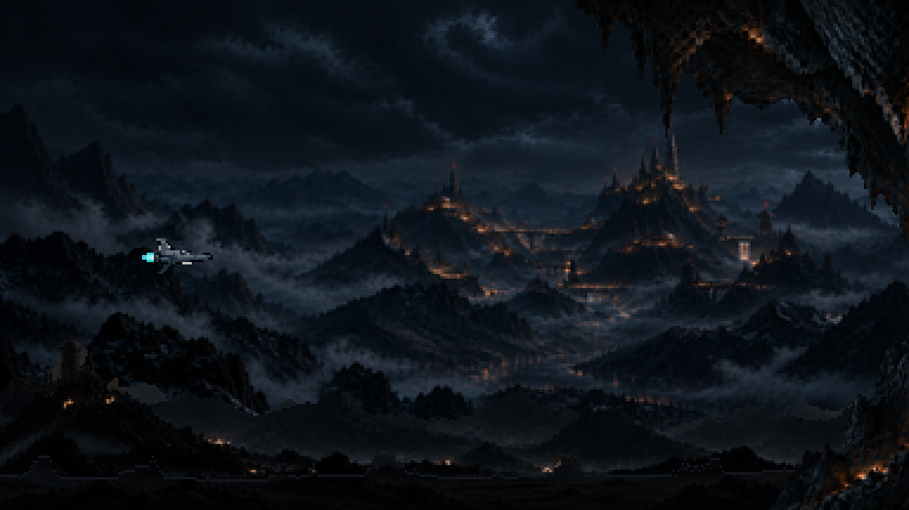
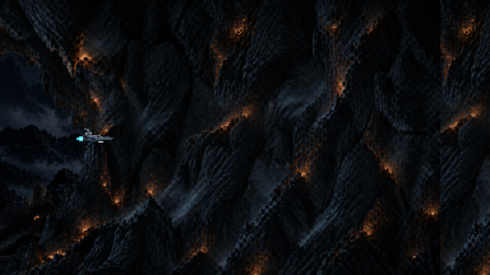
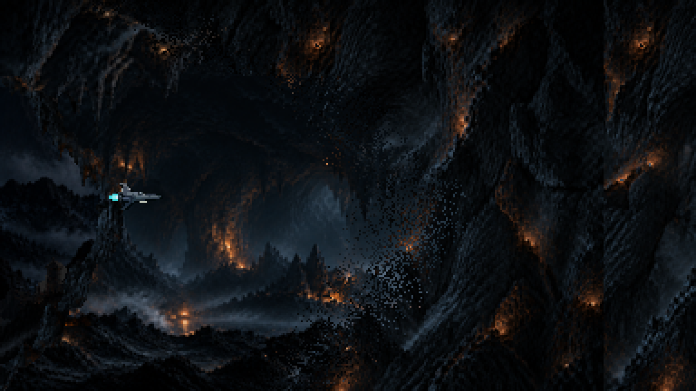
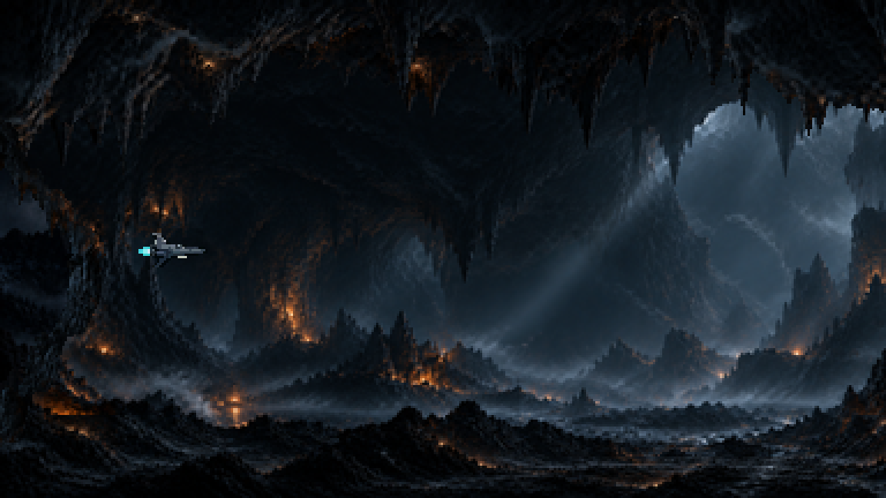
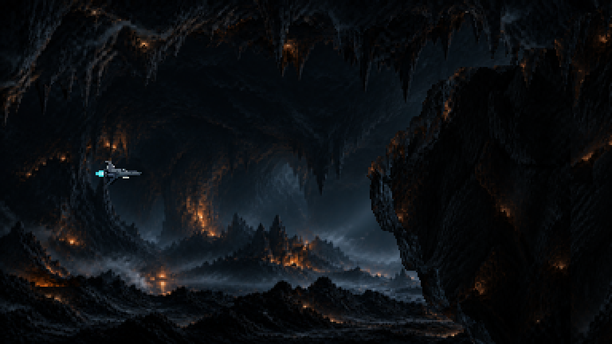
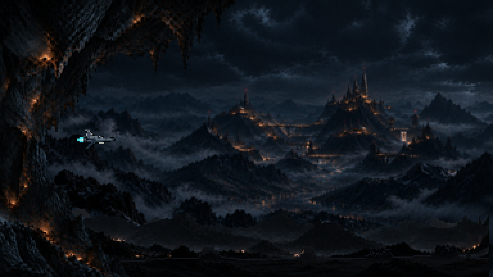
A saída: o buraco (o que você pediu)
A borda da boca da saída faz um "(" — uma meia-lua invertida aberta para a direita. A camada nova, um layer à frente, é a sua Parede da entrada sem espelhar: a borda da boca dela já é a meia-lua côncava ")" com os dentes de rocha. As duas juntas fecham um buraco oval, por onde se vê um pouco do exterior. Quando a nave atravessa o buraco, a camada da frente se desfaz a partir dele e o exterior abre; atrás, a montanha se fecha sobre a caverna.
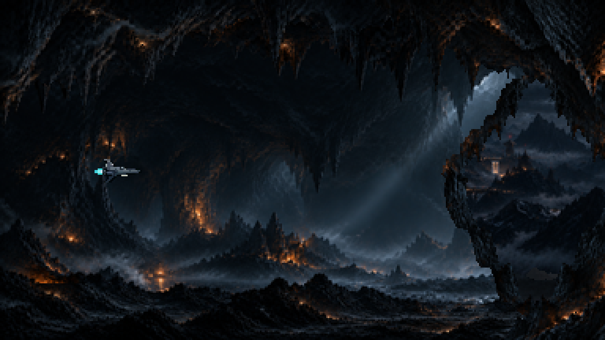
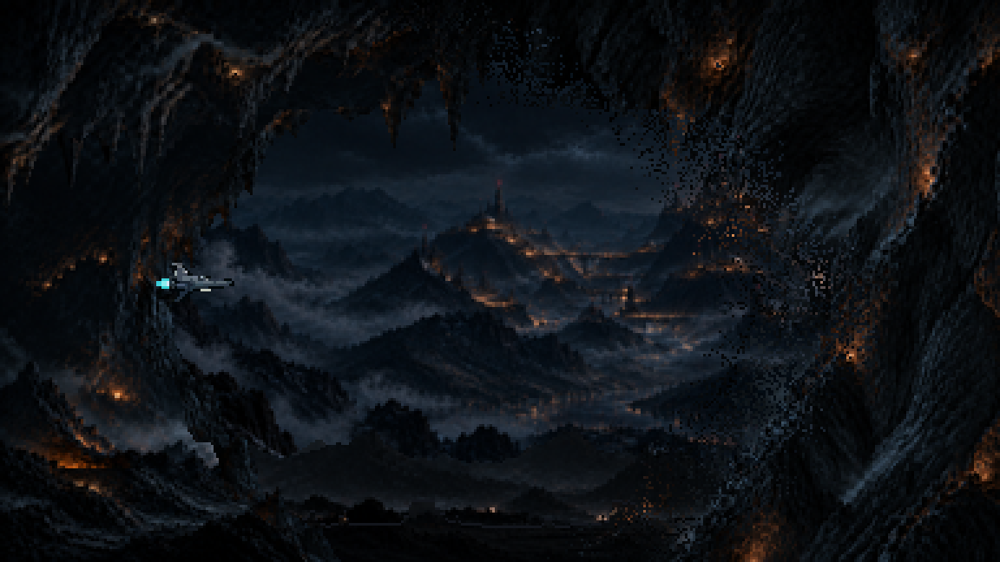
as versões descartadas (o arco, a janela, a parede escura)
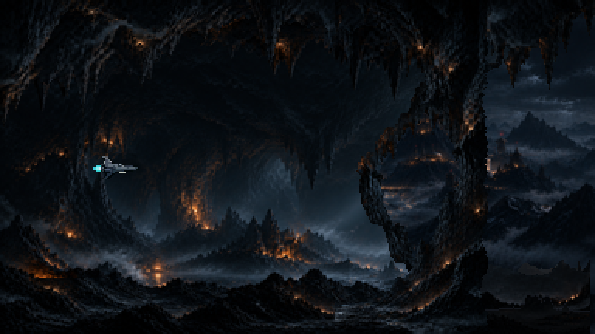
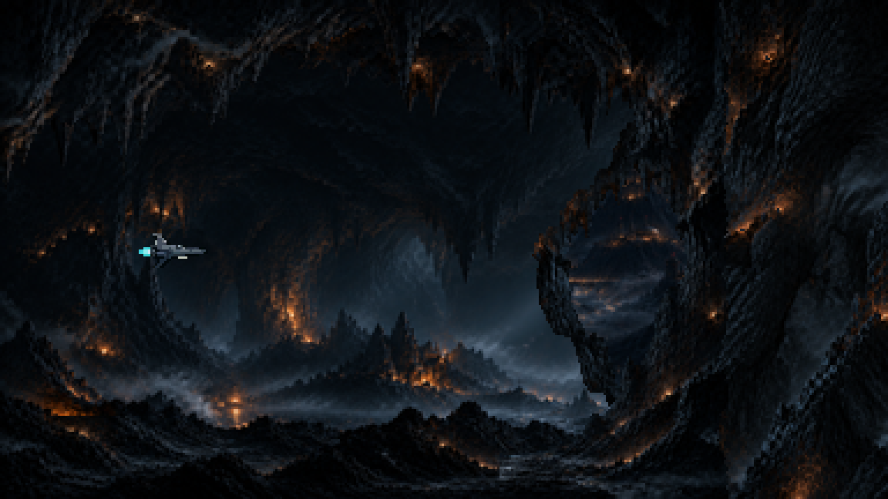
A primeira tentativa (antes do portal)
Sem a sua Parede: o interior aparecia à direita da parede da Moldura assim que ela entrava na tela.
A ideia da transição
- A sua Moldura espelhada é a ENTRADA (a parede fechada fica à esquerda); a Moldura como você pintou é a SAÍDA (a parede à direita).
- O fundo do interior só existe entre as duas paredes: à direita da parede da entrada, à esquerda da parede da saída. As paredes andam com o mundo; o interior aparece exatamente quando a boca passa, e o exterior volta exatamente quando a saída passa.
- A rocha da boca cobre a costura entre os dois fundos. Ela era a borda da imagem, um corte reto; aqui ela já está recortada como rocha.
- Dentro: o fundo do interior, o seu teto de estalactites em cima e o chão da Moldura embaixo, como um corredor.
Duas formas de boca
B · a parede inteira como corte da montanha (a que eu recomendo)
A parede fica no plano de trás e a nave passa na frente dela: lê como a borda da montanha com a caverna depois.
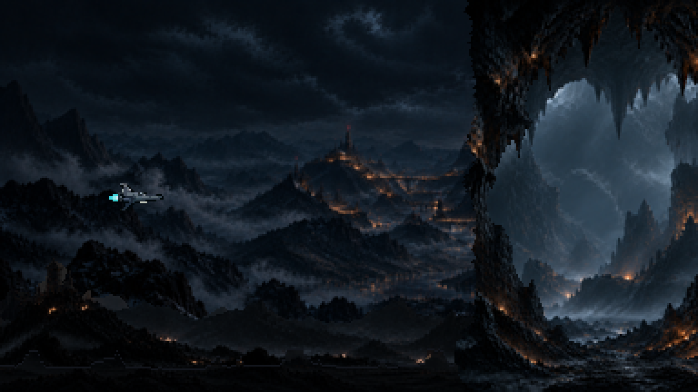
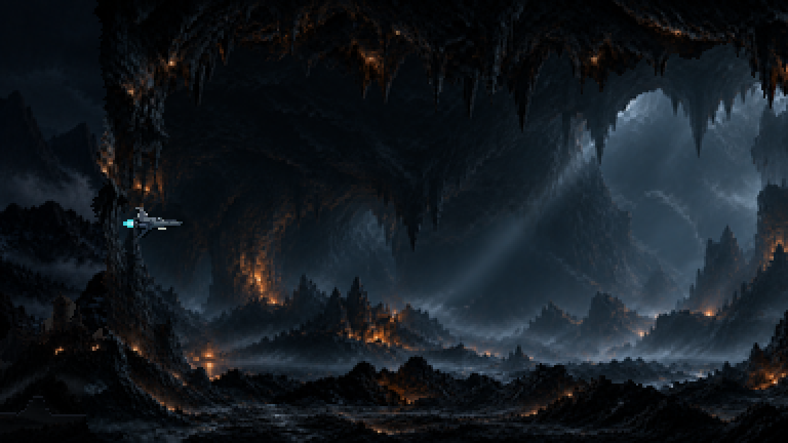
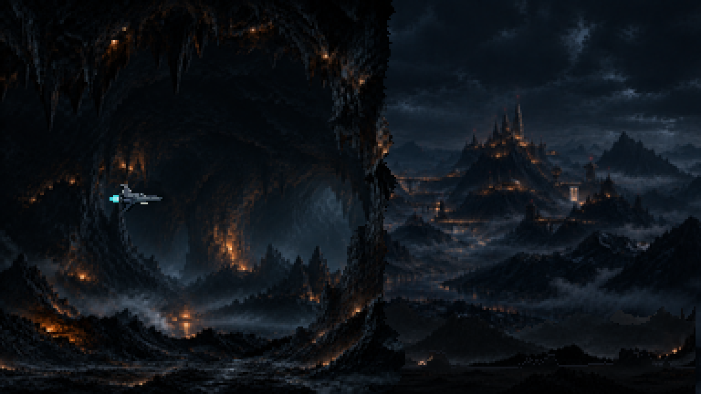
A · a boca com garganta escura
A rocha só em cima e embaixo, e no vão um degradê de escuridão esconde a costura. Em pixel, o degradê vira uma coluna pontilhada: não convence.
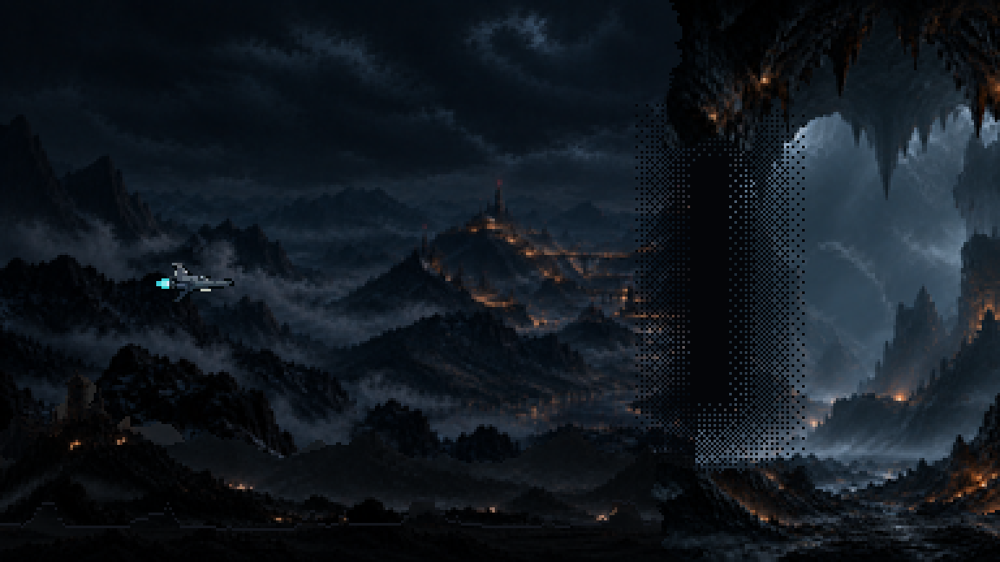
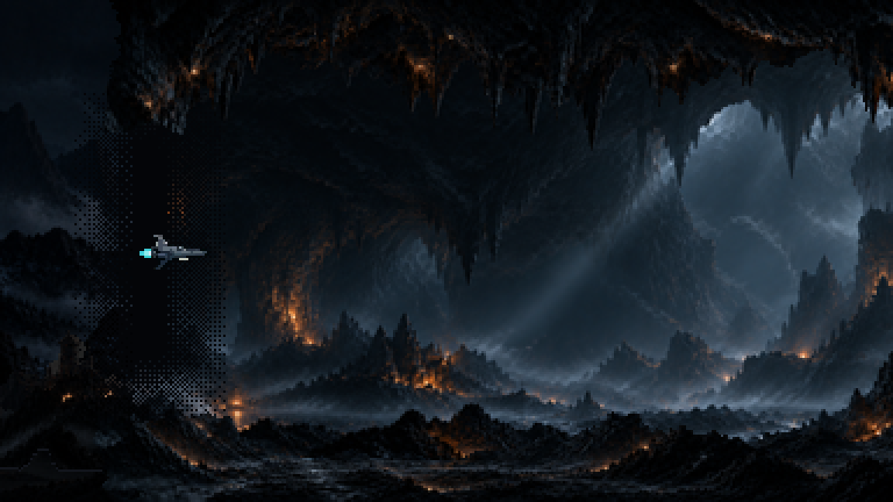
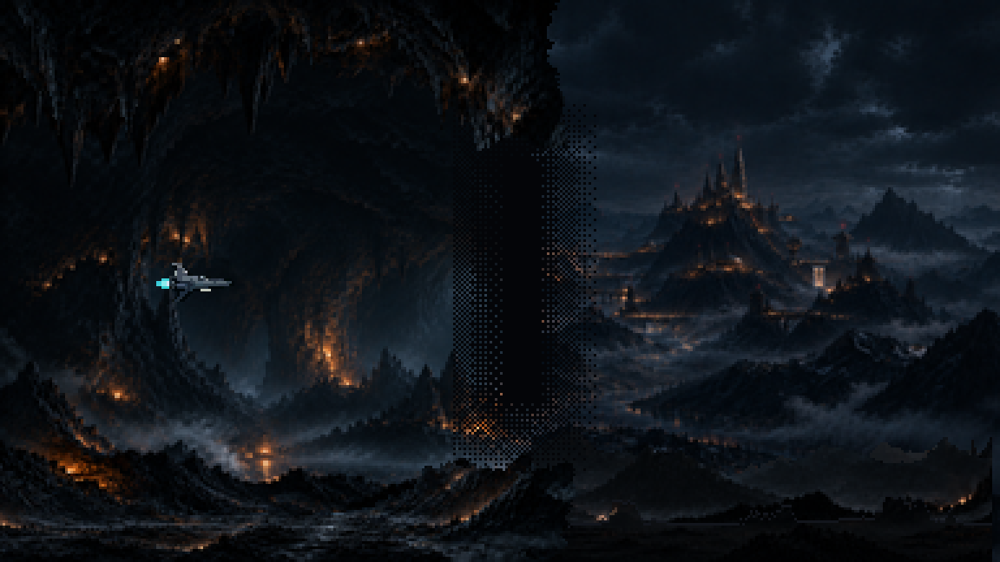
Dentro
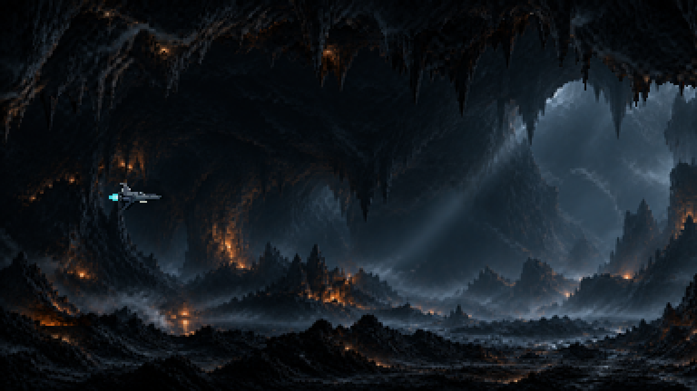